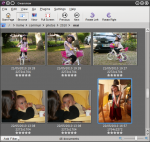

public: yes
tags: ["Gwenview","KDE","akademy"]
title: "Gwenview in KDE SC 4.5"

As usual, I have been busy with too many projects during KDE SC 4.5 development cycle, so I am afraid the new Gwenview does not feature any ground-breaking changes. Still I managed to fix some annoying bugs and integrated a few nice features. Here is a commented list of the most interesting changes:
- Gwenview is now much more asynchronous.
This is where I spent most of my Gwenview development time. In previous versions, operations like rotation or image saving would block the UI. This is no longer the case, all operations which used to block the UI now show a spinner on the affected image and let you continue browsing while Gwenview is busy working. It does not sound like much, but it required quite a bit of refactoring and it lays down the foundations for some interesting ideas I have in mind, hopefully for KDE SC 4.6.
- EXIF information is no longer lost after a crop, a resize or a red eye reduction...
I am a bit ashamed I did not fix that one earlier. Gwenview used to keep EXIF information for lossless operations like rotations, but would get rid of them as soon as you did some lossy work...
- Wrap around when panning images, patch by Ismael Barros.
I was a bit skeptical about this, but it turns out to be really great to be able to pan large images without having to release the mouse button.
- Show image size and file size below thumbnails, patch by Aaron Seigo and me
This one got started after a somewhat inflammatory review of KDE applications in Linux Journal, I am glad it's here even if it's still a bit buggy, need to fix it.
- One of the most wanted option: "Disabling video support" has finally been added.
This option can unfortunately come handy if you are unlucky to have videos which Phonon dislike to the point of causing crashes...
So, not much changes, but hopefully changes you will find useful.
In other news, I am happy to tell you that I will be in Finland next week because
Jonathan Riddell and I will be doing a "What's cooking in Kubuntu for KDE" BoF. This could be a great way for you to learn what I have been working on instead of hacking on Gwenview!
{kind=link}